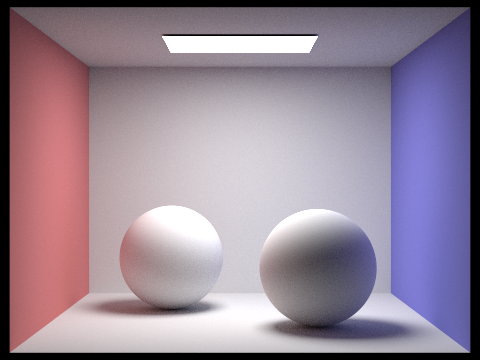

Use this section to write an overview of the assignment. All of the text in your write-up should be in your own words. If you need to add additional HTML features to this document, you can search the http://www.w3schools.com/ website for instructions. To edit the HTML, you can just copy and paste existing chunks and fill in the text and image file names appropriately.
If you are well-versed in web development, feel free to ditch this template and make a better looking page. Just make sure that you include all the components as we've laid them out here.
Part 1: Ray Generation and Intersection
Ray Generation
Given a point in the normalized image, first translate it by (-0.5, -0.5) to get the image centered at (0, 0), then scale the point by
(tan(0.5*hFov) * 2, tan(0.5*vFov)*2)to get the point (new_x, new_y) in camera space. For example, the point (0,0) gets translated into (-0.5, -0.5), then scaled to become (-tan(0.5*hFov), -tan(0.5*vFov)). The camera-to-world rotation matrix is then used on the ray (new_x, new_y, -1) to convert the ray to world space. The ray is then normalized to get the direction vector.
Pixel Sampling
To input pixels from unnormalized image space, we first normalized the x and y coordinates using transformations, then used rand01() with get_sample() to sample random coordinates within the (x,y) pixel. With these samples, we would generate the camera ray which intersects at that point using generate_ray() and use Monte Carlo over all the samples to calculate the pixel’s radiance.
Primitive Intersection
For the primitive intersection, the ray intersection algorithm for the given primitive is used. If the ray intersects(i.e. t >= 0 and other primitive-specific conditions are met), the ray’s max_t value is updated to prevent objects in the back from being visible from the camera.
Triangle Intersection Algorithm
According to barycentric coordinates, a point in a triangle can be described with respect to the triangle’s vertices with the equations
P = alpha*P_0 + beta*P_1 + gamma*P_2
alpha + beta + gamma = 1 and they are all >=0.If a ray R(t) = o + td has a point of intersection on the triangle, then o + td = P, thus we can plug the ray’s equation into the point-in-triangle equation, and if the t, alpha, beta, and gamma values are valid, then the ray properly intersects with the triangle. Since alpha + beta + gamma = 1, alpha can be set to (1 - beta - gamma). Rearranging the equation
o + td = (1-beta-gamma)*P_0 + beta*P_1 + gamma*P_2gives us
-td + (P_1-P_0)beta + (P_2-P_0)gamma = o-P_0This can be written as Mx = b, where
M = [-d, P_1-P_0, P_2-P_0]
x = [t, beta, gamma]^T
b = [o-P_0]Applying Cramer’s rule on the linear equation Mx=b gives us the Moller-Trumbore algorithm, which we use to find t, beta, and gamma. After getting the t, beta, and gamma values, if t < 0, beta < 0, beta > 1, gamma < 0, gamma > 1, or 1-beta-gamma < 0, then the ray does not intersect with the triangle. Otherwise, it intersects the triangle.

|

|

|

|
Part 2: Bounding Volume Hierarchy
BVH Construction Algorithm
We started by initializing a bounding box. We iterated through all our primitives, expanding the bounding box to include the primitive bounding boxes and finding the max and min x,y,z values. After looping through our primitives, we computed the average of our bounding boxes centroids and determined which axis had the greatest range of values in the bounding box. This axis would be the one we partition on later. Our splitting point heuristic was the average of bounding box centroids. If the number of primitives was greater than the max number of leaves variable given, we need to continue splitting. We used std::partition to split the primitives into new nodes, based on the axis we decided earlier. If any partitions are empty, we risk running into a segfault and slower runtime so we move one primitive over to the empty side. Then we recursively construct our left and right leaves. If we are at a leaf, we don’t do anything in addition to expanding the bounding box (explained above).

|
|
|
|
|
|
|
Rendering Time Comparisons
We rendered both the blob and the bench during part 1 without BVH acceleration, and blob.dae took approximately 20 minutes to complete rendering without BVH, but took 13 seconds using BVH acceleration. Bench.dae took about 10 minutes to complete rendering without BVH acceleration, and took less than a second with BVH acceleration. CBLucy and MaxPlanck were close to impossible without BVH acceleration. With BVH acceleration, CBLucy took less than a second to complete and MaxPlanck took around 3 seconds to complete.
Part 3: Direct Illumination
Uniform Hemisphere Sampling Algorithm
We start by calculating our PDF, which is constant 1/2pi for uniform hemisphere sampling. We then loop num_sample times and use hemisphereSampler to sample a new unit direction, which will be w_i in object space coming out of hit_p. We then convert w_i to world space and create a new ray with an origin at our hit point (+ a small constant to offset floating point issues) and the world space w_i for its direction. We create a new intersection instance for this new ray, and if the ray intersects any objects (using BVHAccel’s intersect), we calculate the reflectance given our incoming and outgoing solid angles, radiance, and cosine theta (dot product of (0, 0, 1) and our sample in object space). We then add the reflectance / PDF to our Monte Carlo sum, which we then divide by num_samples and return after we finish looping num_sample times.
Importance Sampling Lights Algorithm
We loop through all the lights and keep track of how many samples we should take per light. If a light is a point light, num_samples = 1. If it is not a point light, we sample it num_samples = ns_area_light times. Next, we loop through the number of samples we want per light, use sample_L to calculate radiance and populate our dist_to_light, w_i in world space, and pdf for that sample. We create a new ray with the direction as w_i, hit_p as the origin, and the dist_to_light as the max_t. EPS_F is also used to prevent floating point issues. We create a new intersection for this ray as well. If our new intersection does not intersect with the ray we just made, there’s no shadow and we need to factor it into monte carlo. We also calculate cosine_theta using w_i translated to object space to see if it’s negative. If cosine_theta is negative, our light source is behind the object and we don’t need to add anything to our monte carlo radiance. For each sample, we calculate the radiance using w_out and w_i in object space (the same way we did for uniform hemisphere sampling), then divide the value by pdf * num_samples (so that point light is factored in properly). For each sample, we add the calculated radiance / (pdf * num_samples) to the total radiance to get the Monte Carlo Estimate of radiance by the end of looping through all the lights.
|
|
|
Various Light Rays with Importance Sampling
The noise level in soft shadows is much greater when rendering with 1 light ray, causing them to look more like sporadic dark pixels than shadows. As we render with more light rays,, the shape and overall clarity of the soft shadow improves.
|
|
|
|
|
|
Part 4: Global Illumination
Global Illumination Algorithm
We first set L_out to one-bounce radiance of intersection and CPDF to a termination probability of 0.35. From sample_f(), we get the brdf, w_i, and PDF. We initialize a new intersection and initialize a new ray with the direction as w_i, hit_p as the origin, and the depth as the parameter ray’s depth - 1. EPS_F is also used to prevent floating point issues. If the depth of the given ray is greater than 1 and the new_ray intersects and object, we use russian roulette with the cpdf to determine if we should continue calculating the ray’s bounces If our r.depth is equal to our max_ray_depth, we do not do russian roulette, thus guaranteeing at least one indirect bounce is calculated. We also do not divide our monte carlo radiance (brdf * radiance * cos_theta/PDF) by CPDF. Otherwise, we divide our monte carlo radiance by CPDF. The radiance in our monte carlo calculation is computed with the recursive call on this function, which we then add to L_out. Finally, L_out is returned as the radiance of the intersected point.
Images Rendered with Global Illumination
|
|

|
Only Direct Illumination vs Only Indirect Illumination
|
|
|
Changing max_ray_depth
As our ray depth increases, we can see that our images introduce more light into the box.
This is evident in how the ceiling gradually transitions from being very dark to lit up,
showing that more light is bouncing off materials within the box.
We can also see that there isn’t much difference between a max_ray_depth of 0 and 1
because 1 is just once bounce (which is the same as when max_ray_depth = 0).
While the m=100 image is lighter than all the other max_ray_depth value images,
it is not proportionally brighter due to the russian roulette terminating the ray bounce calculations,
thus causing the calculation of all 100 bounces to be highly unlikely.
|
|
|
|
|
|
|
|
Here is an example of how to include a simple formula:
a^2 + b^2 = c^2
or, alternatively, you can include an SVG image of a LaTex formula.
This time it's your job to copy-paste in the rest of the sections :)
A Few Notes On Webpages
Here are a few problems students have encountered in the past. You will probably encounter these problems at some point, so don't wait until right before the deadline to check that everything is working. Test your website on the instructional machines early!
- Your main report page should be called index.html.
- Be sure to include and turn in all of the other files (such as images) that are linked in your report!
-
Use only relative paths to files, such as
"./images/image.jpg"
Do NOT use absolute paths, such as"/Users/student/Desktop/image.jpg"
-
Pay close attention to your filename extensions. Remember that on UNIX systems (such as the instructional machines), capitalization matters.
.png != .jpeg != .jpg != .JPG
- Be sure to adjust the permissions on your files so that they are world readable. For more information on this please see this tutorial: http://www.grymoire.com/Unix/Permissions.html
- And again, test your website on the instructional machines early!